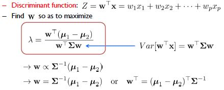

목차
- 판별분석(Discriminant Analysis)이란?
- 선형판별분석(LDA)
- Fisher's Method
- 비선형판별분석(QDA)
- 판별분석 실습
1. 판별분석(Discriminant Analysis)이란?

이번 챕터에서는 판별 분석 (Discriminant Analysis)를 다룰 것입니다. 판별 분석을 잘 아시는 분도 있고, 처음 들어본 분도 있으시겠지만, 이미 들어 보신 분들께는, 흔히 LDA, QDA로 유명하게 알려져 있습니다. 오늘은 먼저 판별 분석의 개념을 배우고, 판별 분석에 내재된 계산 방식과 가정들을 공부한 뒤, 실제 데이터에 대한 실습으로 안내할 생각입니다.
먼저 판별 분석의 정의에 대해서 간략하게 소개해 드리겠습니다. 단어는 판별, 그리고 분석으로 합쳐졌기에, 판별과 분석을 먼저 각각 알아보겠습니다. ‘판별(Discriminant)’은 미리 알려진 여러 개체의 그룹(모집단)에서 관측된 개체들을 각 그룹별로 구분하되, 가능한한 각 개체들을 원래 속해 있던 모집단으로 판별해 주는 방법을 의미합니다. 각 개체와 그룹의 중심(모집단의 평균)과의 거리를 계산하여 가장 가까운 그룹으로 ‘판별’합니다. 간단한 예시는 다음과 같습니다.

파란 그룹과 빨간 그룹의 분포가 다음과 같다고 할 때, 가장 두 그룹을 잘 나눌 수 있는 판별 경계를 찾는 방법이 판별 분석입니다. 누가 보기에도 확연히 우측의 시점이 분포와 경계를 ‘밀도’있게 잘 나타내고 있습니다. 두 범주의 중심이 멀고, 분산은 더 작습니다. 저렇게 더 우수한 변수와 판별 식을 찾는 것이 분류의 목표이며, 판별분석의 목적입니다.
‘분석(Analysis)’은 말 그대로 ‘나누어 생각함’을 의미합니다. 풀어서 말하자면, 복잡한 내용, 많은 내용을 지닌 사물을 정확하게 이해하기 위해 그 내용을 단순한 요소로 나누어 생각함을 의미합니다. 즉 앞서 언급한 ‘판별’의 개념과 합쳐서 생각하면, 사물(새로운 관측값)을 더 잘 이해하기 위해 단순한 요소로 ‘나누어 생각’하며, 그 나누는 기준은 ‘판별법’을 토대로 구성되는 것입니다. 그렇기에 새로 관측된 개체를 사전에 알고 있던 여러 개의 그룹 중 하나의 그룹으로 ‘분류’하는 성격을 가지고, ‘분류법(classification)’으로 쓰이는 것입니다.
결론적으로 판별 분석은 ‘두 개 이상의 모집단에서 추출된 표본들이 지니고 있는 정보들을 이용하여, 이 표본들이 어느 모집단에서 추출된 것인지를 결정해 줄 수 있는 기준을 찾는 분석법’입니다. 즉 표본의 정보를 바탕으로 관측된 데이터를 다시 그 표본으로 분별하는 방법입니다. 한 데이터 역시 어떤 모집단의 출신일 것이고, 그 집단에 속할 가능성을 기준으로 데이터를 더 잘 이해하는 것입니다.
2. 선형 판별 분석 Linear Discriminant Analysis
일반적으로 모델은 현실을 반영하기 위해서 여러 가정과 조건을 상정하고 해결할 수 있는 가설과 문제를 포함합니다. 판별 분석이라는 하나의 통계 모델을 이해하기 위해서 현실과는 멀지만 우선 기본적인 제약 조건과, 형식으로 먼저 시작해야 하겠습니다. 즉, 가장 복잡한, 가정과 제약이 없는 ‘현실적인’ 문제를 풀기 위해서 여러 조건들을 가정한 간단한 용례들로 먼저 모델을 구성합니다.
판별 분석의 경우, 그 가정의 첫번째는 2개의 클래스만 있다고 생각하는 것입니다. 즉 종속변수의 클래스 개수를 기준으로 Two-Class일지, Multi-Class일지 그 분석의 방향이 나뉩니다. 그 다음으로 독립변수의 개수에 따라서, 단변량(Univariate)일지, 다변량(Multivariate)일지에 따라 나뉩니다. 그리고 그 모집단들의 경우에서도, 비교될 두 모집단이 같은 분산을 띄는지 아닌 지에 따라서 선형(Linear)모델과 비선형(ex. 이차형Quadratic)모델로 나뉩니다. 먼저 비교적 간단한 LDA를 Two-class, univariate에서 공부한 후 multi-class, multivariate, QDA로 확장하겠습니다.
먼저, LDA는 분류 식이 입력 변수들의 선형 조합의 형태인 경우를 의미합니다. 평균으로부터 떨어진 거리를 측정하는데, 즉 분산이 같다는 가정 하에, Univariate와 Multivariate 경우 모두 결국 선형인 식의 결합으로 표현됩니다. 참조로, Welch와 Fisher라는 두 통계학자가 다른 Discriminant Rule을 가지고 접근했습니다. 우선 Welch가 쓴, Bayes Rule을 바탕으로 진행하고, 추가로 Fisher’s Method로 알려진, ‘그룹 내 분산 대비 그룹 간 분산을 최대’로 하는 방법을 설명하겠습니다. 베이즈 룰에 관해서 복습하고 싶으시면 데이지 문서 ‘베이즈 분류모형’을 참조해주시면 되겠습니다.

베이즈 룰에 기반한 확률 모형을 이용하면, 위와 같은 판별식으로 표현됩니다. Univariate의 경우, 1개의 변수 x가 두 집단의 평균에서 얼마나 더 가까운지 판단하는 식이며, Multivariate의 경우, 벡터로 구성된 2개이상의 독립변수들이 떨어진 정도를 합산한 것으로 판단하는 식입니다. 두 식 모두 독립변수(variate)의 개수가 다를 뿐, 같은 분산을 가정한 경우, 선형입니다.
이때 이 접근 방식은 구분하려는 두 모집단의 분포가 정규분포를 이루는 것을 가정합니다. 베이지안 확률 계산 식의 계산의 편리와, 대부분의 자연의 분포가 정규분포 함을 이유로 전제한 것입니다. 두 경우의 확률 함수는 f1(x)와 f2(x) 둘로 표현되며, 같은 분산의 전제 하에 식은 정리되어 위의 판별식처럼 표현할 수 있습니다.
2. 피셔의 접근방법 Fisher's Method
이제, 앞서 언급했던 Fisher’s Method로 다르게 접근하면, 피셔의 방법은 베이즈 접근법과 달리, 두 모집단에 대한 분포 가정은 필요 없지만, 선형성을 위해 분산은 같다는 전제를 계속 가정합니다.

판별식 Z는 위와 같이 표현됩니다. Multivariate에서 회귀 식과 유사하게도, 각 변수마다의 최적 weight 값을 찾아야 하는데, 피셔의 방법에서는 집단 간의 표준편차를 집단 내부 표준 편차로 나눈 값을 최대한으로 만드는 값이 되어야 합니다. 개념적으로 이해하면, 집단 내부의 결집도는 증가시키고, 집단 간의 산포도는 최대한으로 올려, 확실히 구분 짓는 ‘분포’를 생각한 모델입니다.
만일 위의 그림과 같이, 두 클래스를 나누는 경우에, 다음과 같은 판별식이 세워질 수 있고, 이후정리를 거치면 베이즈 접근 식과 똑 같은 분류 식을 만들 수 있습니다. 시작된 전제와 접근 법은 달랐지만 결과는 같았습니다. 새로운 관측 값이 들어왔을 때, 기존의 데이터를 통해서 표본 평균과, 표본 분산을 구해서 계산을 진행합니다.
4. 비선형 판별 분석 Quadratic Discriminant Analysis
이제 보다 현실적인 모델에 가까워져 보겠습니다. 먼저 2개의 클래스에서 3개의, 그리고 그 이상의 클래스로 확장된 경우를 살펴보면, 분산의 식이 아래와 같이 바뀝니다.
즉, 분산이 비록 같다는 전제를 하더라도, 그 식의 추론의 경우, 모든 분산의 합을 고려하는 방식으로 주어진 데이터를 통해서 추론해야 합니다. 표본의 표준편차가 전체에서 차지하는 비율 만큼 그 의미가 변합니다.
분포, 즉 분산이 같다는 전제를 좀 더 현실적으로 ‘다르다’고 바꾸면 선형 분류를 할 수 없습니다. 이때 나온 방식이 이차 판별 분석(Quadratic Discriminant Analysis), QDA입니다. 당연하게도, 선형이었던 식에서 이제 X^2과 같은 고차항의 분류 곡선이 출현합니다.
식의 전개 과정에서, (x-u1)의 내적 값을 계산하게 되는 데, 이 때 X^2이 출현하기 때문에 quadratic해집니다. 결국 주어진 데이터를 바탕으로 두 집단의 표본 평균과 편차를 구해서, 판별해야 합니다.
5. 판별분석 실습
코드 파일 링크:
블로그의 내용이 도움이 되었나요? 저에게 주신 의견을 바탕으로 더 나은 컨텐츠를 만들어갈게요:)